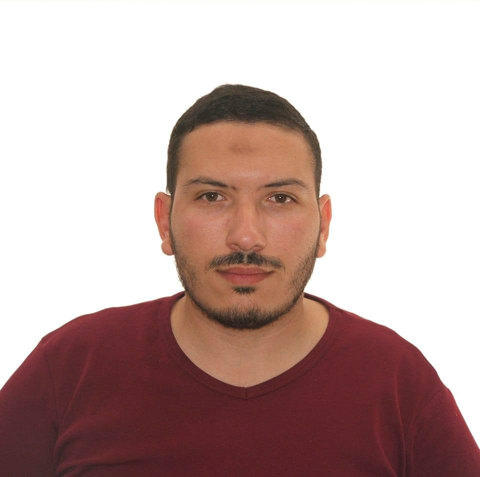

Linkedin
Researchgate
GitHub
DIB Abdelkrim Yassine Taki-Eddine
I'm undergraduate student in computer science department in Djillali Liabes University, Sidi Bel Abbes east of Algeria.
My academic research interests area: Cryptography, Networks and Algorithms Optimization. Currently I work in an academic project about DHCP protocol.
What are waiting to contact me to collaborate?
Contact
emailResearchgate
GitHub
My Academic works
About my Academic works:
My academic research interests lie in Cryptography, Networks, and Algorithms Optimization. Here is a list of my academic works, including projects and publications.
| ID | Title | Type | Date | File |
|---|---|---|---|---|
| 1 | Research on DHCP Protocol | Project | 2023-11-15 | Download |
| Description: This project explores the efficiency and security of the DHCP protocol in modern network environments. | ||||
| 2 | Cryptography Algorithms Analysis | Paper | 2023-09-20 | Download |
| Description: An analysis of various cryptographic algorithms, focusing on their strengths and weaknesses in different applications. | ||||